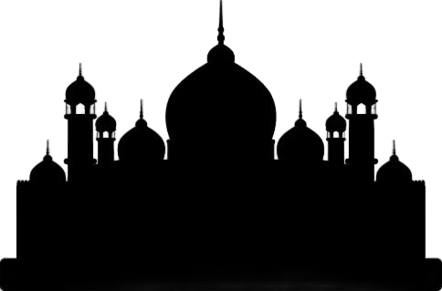

Versi Terbaru v1.4.0
Aplikasi produktivitas Islami yang dirancang dengan estetika modern, minimalis, dan fungsional. Membantu Anda istiqamah dalam ibadah harian secara mudah, tenang, dan tertata.
Maghrib tersisa 2 jam 15 menit lagi
Qibla Finder
GPS Presisi
إِيَّاكَ نَعْبُدُ وَإِيَّاكَ نَسْتَعِينُ
"Hanya kepada-Mu kami menyembah dan hanya kepada-Mu..."
QS. Al-Fatihah: 5
Target Harian
Dilengkapi dengan fitur inti yang terintegrasi penuh untuk memastikan Anda tidak melewatkan momentum kebaikan setiap hari.
Jadwal shalat terintegrasi berdasarkan koordinat GPS Anda secara otomatis dengan notifikasi alarm adzan yang merdu.
Membaca Al-Quran digital kapan saja. Dilengkapi fitur penanda halaman / riwayat bacaan terakhir agar tilawah Anda teratur.
Buat target rutinitas kebaikan Anda sendiri, pantau progress harian, dan bangun habit shalih dengan pencapaian terukur.
Temukan arah kiblat Ka'bah dengan presisi tinggi di mana pun Anda berada memanfaatkan sensor magnetik & akselerometer perangkat.
Cobalah berinteraksi langsung dengan simulasi widget asli dari aplikasi kami. Kami merancang interface yang terasa hidup, organik, dan sangat bersahabat bagi pengguna.
Tandai tugas harian di sebelah kanan untuk melihat visualisasi progress bar terisi.
Arahkan kursor mouse Anda pada kartu Kompas Kiblat untuk memutar jarum arah shalat.
Gerakkan pointer Anda di atas kartu untuk memutar kompas ke arah kiblat presisi.
Setiap detail didesain dengan rasa peduli yang mendalam. Temukan keindahan minimalis yang memicu ketenangan.
2 jam 15 menit lagi
Senin, 1 Juni 2026
Terjemahan Standar Kemenag RI
Al-Fatihah
Pembukaan • 7 Ayat
Al-Baqarah
Sapi Betina • 286 Ayat
Al-Kahfi
Penghuni Gua • Terakhir Dibaca
Yasin
Ya Sin • 83 Ayat
Menghadap Kabah (Makkah)
Salurkan Sedekah dengan Praktis
Pindai QR di atas menggunakan aplikasi dompet digital Anda (Gopay, OVO, Dana, dll.)

"(yaitu) orang-orang yang beriman dan hati mereka menjadi tenteram dengan mengingat Allah. Ingatlah, hanya dengan mengingat Allah hati menjadi tenteram."QS. Ar-Ra'd: 28
Unduh versi APK resmi secara langsung dan rasakan sendiri kemudahan mengorganisasikan ibadah Anda bersama ribuan umat Muslim lainnya.